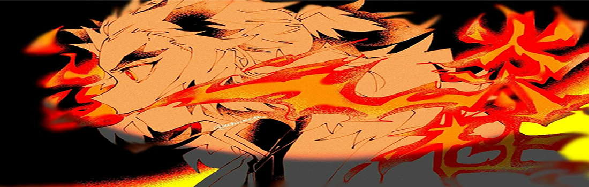

动画电影《鬼灭之刃：无限列车篇》改编自日本漫画家吾峠呼世晴创作的漫画作品《鬼灭之刃》。该片由ufotable负责制作，于2020年10月16日在日本上映。中国港澳台由木棉花代理发行，中国台湾于2020年10月30日上映日语配音版，11月6日上映中文配音版 [1] ，中国港澳则于2020年11月12日上映。
剧情简介：
在蝴蝶屋结束修业之后，炭治郎等人抵达了下一任务的地方“无限列车”。在那里，短时间内有四十多人失踪。带着祢豆子的炭治郎与善逸、伊之助一行人，与鬼杀队的最强剑士“柱”之一的炎柱炼狱杏寿郎会合了。在通向黑暗的无限列车中，他们将面对潜伏在此的鬼。
